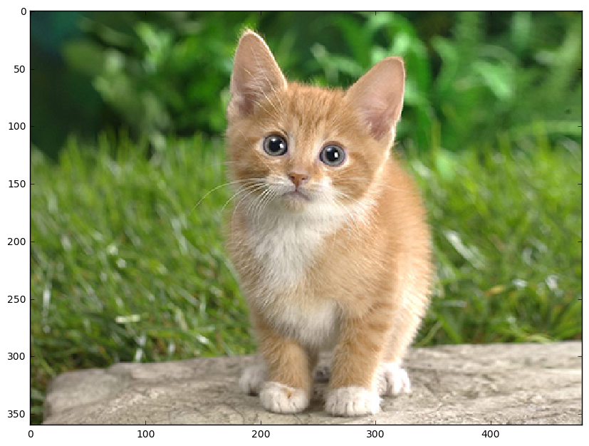
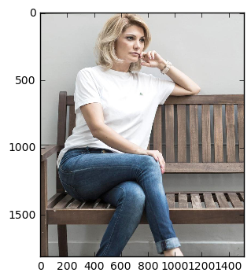

caffe_实战之两个简单的例子（物体分类和人脸检测）
一、物体分类：
这里使用的是caffe官网中自带的例子，我这里主要是对代码的解释~
首先导入一些必要的库：
- import caffe
- import numpy as np
- import matplotlib.pyplot as plt
- %matplotlib inline
- plt.rcParams['figure.figsize'] = (10 , 10) #显示图像的最大范围,使用plt.rcParams['savefig.dpi']得到缺省的dpi值为100，则最大的图片范围为1000*1000
- plt.rcParams['image.interpolation'] = 'nearest' #最近邻差值方式
- plt.rcParams['image.cmap'] = 'gray' #灰度空间，表明显示图像时是灰度图而不是彩色图 import sys caffe_root = 'E:\\caffe\\caffe-master\\' sys.path.insert(0 , caffe_root + 'python')
- import os
- caffe.set_mode_cpu() #CPU模式
- model_def = caffe_root + 'models/bvlc_reference_caffenet/deploy.prototxt' #加载配置文件
- model_weights = caffe_root + 'models/bvlc_reference_caffenet/bvlc_reference_caffenet.caffemodel' #加载模型文件
- net = caffe.Net(model_def , model_weights , caffe.TEST) #用caffe的测试模式，即只是提取特征，不训练
- #预处理函数
- #caffe中用的图像是BGR空间，但是matplotlib用的是RGB空间；再比如caffe的数值空间是[0,255]，但是matplotlib的空间是[0,1]，这些都需要转换
- #载入imagenet的均值，实际图像要减去这个均值，从而减少噪声影响（同时还有特征缩放的作用？）
- mu = np.load(caffe_root + 'python/caffe/imagenet/ilsvrc_2012_mean.npy')
- mu = mu.mean(1).mean(1) #计算像素的平均值(mean(1)按每行计算均值)
- print 'mean-subtracted values:' , zip('BGR' , mu) #打印B、G、R的平均像素值
- transformer = caffe.io.Transformer({'data' : net.blobs['data'].data.shape}) #用转换函数Transformer函数使transformer得到data层的数据格式
- transformer.set_transpose('data' , (2 , 0 , 1)) #由于python中读取的图片格式为H*W*K，所以需要转换为caffe的格式即K*H*W
- transformer.set_mean('data' , mu) #每个通道都减去平均像素值
- transformer.set_raw_scale('data' , 255) #python 中将图片存储为[0,1]，而caffe中将图片存储为[0,255]，而这里是Python空间，所以将[0,1]转换为[0,255]
- transformer.set_channel_swap('data' , (2 , 1 , 0)) #交换RGB空间到BGR空间
- net.blobs['data'].reshape(50 , 3 , 227 , 227) #batchsize=50,3通道，图像大小为227*227
- image = caffe.io.load_image(caffe_root + 'examples/images/cat.jpg')
- transformed_image = transformer.preprocess('data' , image) #执行上面的图像预处理操作，并将image载入到blob中，和下面语句一起的
- plt.imshow(image) #显示图片

- net.blobs['data'].data[...] = transformed_image
- output = net.forward() #进行一次前向传播
- output_prob = output['prob'][0] #output_prob存储属于每类的概率，['prob'][0]，它是一个一维数组
- '''
- layer {
- name: "prob"
- type: "Softmax"
- bottom: "fc8"
- top: "prob"
- }
- '''
- print 'predicted class is:' , output_prob.argmax() #最大概率所在的类别
- out:predicted class is: 281
- labels_file = caffe_root + 'data/ilsvrc12/synset_words.txt'
- labels = np.loadtxt(labels_file , str , delimiter = '\t') #一行一行读取到labels中，定界符delimiter是\t
- print 'output label:' , labels[output_prob.argmax()]
out:
- output label: n02123045 tabby, tabby cat
- #输出概率较大的前5个物体
- top_inds = output_prob.argsort()[: : -1][: 5] #得到数组值从小到大的索引值后再从右向左进行提取，并取前5个即概率最大的5个物体
- print 'probabilities and labels:'
- zip(output_prob[top_inds] , labels[top_inds])
out:
- probabilities and labels:
- [(0.3124361, 'n02123045 tabby, tabby cat'),
- (0.23797169, 'n02123159 tiger cat'),
- (0.12387215, 'n02124075 Egyptian cat'),
- (0.10075664, 'n02119022 red fox, Vulpes vulpes'),
- (0.070956953, 'n02127052 lynx, catamount')]
- import caffe
- %matplotlib inline
- import numpy as np
- import matplotlib.pyplot as plt
- import matplotlib.cbook as cbook
- #import Image
- import sys
- import os
- from math import pow
- from PIL import Image, ImageDraw, ImageFont
- import cv2
- import math
- import random
- caffe_root = 'E:\\caffe\\caffe-master\\'
- sys.path.insert(0, caffe_root + 'python')
- os.environ['GLOG_minloglevel'] = '2'
- caffe.set_mode_cpu()
- #非极大值抑制算法NMS
- class Point(object):
- def __init__(self, x, y):
- self.x = x
- self.y = y
- def calculateDistance(x1,y1,x2,y2): #计算人脸框的对角线距离
- dist = math.sqrt((x2 - x1)**2 + (y2 - y1)**2)
- return dist
- def range_overlap(a_min, a_max, b_min, b_max):
- return (a_min <= b_max) and (b_min <= a_max)
- def rect_overlaps(r1,r2):
- return range_overlap(r1.left, r1.right, r2.left, r2.right) and range_overlap(r1.bottom, r1.top, r2.bottom, r2.top)
- def rect_merge(r1,r2, mergeThresh):
- if rect_overlaps(r1,r2):
- # dist = calculateDistance((r1.left + r1.right)/2, (r1.top + r1.bottom)/2, (r2.left + r2.right)/2, (r2.top + r2.bottom)/2)
- SI= abs(min(r1.right, r2.right) - max(r1.left, r2.left)) * abs(max(r1.bottom, r2.bottom) - min(r1.top, r2.top))
- SA = abs(r1.right - r1.left)*abs(r1.bottom - r1.top)
- SB = abs(r2.right - r2.left)*abs(r2.bottom - r2.top)
- S=SA+SB-SI
- ratio = float(SI) / float(S)
- if ratio > mergeThresh :
- return 1
- return 0
- class Rect(object):
- def __init__(self, p1, p2): #p1和p2为对角线上的两个点
- '''Store the top, bottom, left and right values for points
- p1 and p2 are the (corners) in either order
- '''
- self.left = min(p1.x, p2.x) #?????
- self.right = max(p1.x, p2.x)
- self.bottom = min(p1.y, p2.y)
- self.top = max(p1.y, p2.y)
- def __str__(self):
- return "Rect[%d, %d, %d, %d]" % ( self.left, self.top, self.right, self.bottom )
- def nms_average(boxes, groupThresh=2, overlapThresh=0.2):
- rects = []
- temp_boxes = []
- weightslist = []
- new_rects = []
- for i in range(len(boxes)):
- if boxes[i][4] > 0.2:
- rects.append([boxes[i,0], boxes[i,1], boxes[i,2]-boxes[i,0], boxes[i,3]-boxes[i,1]])
- rects, weights = cv2.groupRectangles(rects, groupThresh, overlapThresh) #函数解释http://blog.csdn.net/nongfu_spring/article/details/38977833
- rectangles = []
- for i in range(len(rects)):
- testRect = Rect( Point(rects[i,0], rects[i,1]), Point(rects[i,0]+rects[i,2], rects[i,1]+rects[i,3]))
- rectangles.append(testRect)
- clusters = []
- for rect in rectangles:
- matched = 0
- for cluster in clusters:
- if (rect_merge( rect, cluster , 0.2) ):
- matched=1
- cluster.left = (cluster.left + rect.left )/2
- cluster.right = ( cluster.right+ rect.right )/2
- cluster.top = ( cluster.top+ rect.top )/2
- cluster.bottom = ( cluster.bottom+ rect.bottom )/2
- if ( not matched ):
- clusters.append( rect )
- result_boxes = []
- for i in range(len(clusters)):
- result_boxes.append([clusters[i].left, clusters[i].bottom, clusters[i].right, clusters[i].top, 1])
- return result_boxes
- def generateBoundingBox(featureMap, scale): #由于做了scale变换，所以在这里还要将坐标反变换回去
- boundingBox = [] #存储候选框，以及属于人脸的概率
- stride = 32 #感受野的大小，filter大小,这个需要自己不断地去调整；
- cellSize = 227 #人脸框的大小，它这里是认为特征图上的一块区域的prob大于95%，就以那个点在原始图像中相应的位置作为人脸框的左上角点，然后框出候选框，但这么做感觉会使候选框变多
- #遍历最终的特征图，寻找属于人脸的概率大于95%的那些区域，加上Box
- for (x,y), prob in np.ndenumerate(featureMap):
- if(prob >= 0.95):
- boundingBox.append([float(stride * y)/ scale,
- float(x * stride)/scale,
- float(stride * y + cellSize - 1)/scale,
- float(stride * x + cellSize - 1)/scale, prob])
- return boundingBox
- def face_detection(imgFile):
- net_full_conv = caffe.Net(os.path.join(caffe_root, 'faceDetect', 'deploy_full_conv.prototxt'),
- os.path.join(caffe_root, 'faceDetect', 'alexnet_iter_50000_full_conv.caffemodel'),
- caffe.TEST)#全卷积网络(导入训练好的模型和deploy配置文件)
- randNum = random.randint(1,10000) #设置一个在1到10000之间的随机数
- scales = [] #设置几个scale，组成图像金字塔
- factor = 0.793700526 #图像放大或者缩小的一个因子（经验值）
- img = cv2.imread(imgFile) #读入测试图像
- largest = min(2, 4000/max(img.shape[0:2])) #设定做scale变幻时最大的scale
- scale = largest
- minD = largest*min(img.shape[0:2]) #设定最小的scale
- while minD >= 227: #只要最小的边做完最大的scale变换后大于227，之前得到的largest就可以作为最大的scale来用，并依此乘上factor，加入到scale列表中
- scales.append(scale)
- scale *= factor
- minD *= factor
- total_boxes = [] #存储所有的候选框
- #进行多尺度的人脸检测
- for scale in scales:
- scale_img = cv2.resize(img,((int(img.shape[0] * scale), int(img.shape[1] * scale)))) #调整图像的长和高
- cv2.imwrite('E:\\caffe\\caffe-master\\faceDetect\\scale\\scale_img.jpg',scale_img) #保存图像
- #图像预处理
- im = caffe.io.load_image('E:\\caffe\\caffe-master\\faceDetect\\scale\\scale_img.jpg') #得到的特征值是0到1之间的小数
- net_full_conv.blobs['data'].reshape(1,3,scale_img.shape[1],scale_img.shape[0]) #blobs['data']指data层，字典用法；同时由于图像大小发生了变化，data层的输入接口也要发生相应的变化
- transformer = caffe.io.Transformer({'data': net_full_conv.blobs['data'].data.shape}) #设定图像的shape格式
- transformer.set_mean('data', np.load(caffe_root +
- 'python\\caffe\\imagenet\\ilsvrc_2012_mean.npy').mean(1).mean(1)) #减去均值操作
- transformer.set_transpose('data', (2,0,1)) #move image channels to outermost dimension
- transformer.set_channel_swap('data', (2,1,0)) #swap channels from RGB to BGR
- transformer.set_raw_scale('data', 255.0) #rescale from [0,1] to [0,255]
- out = net_full_conv.forward_all(data=np.asarray([transformer.preprocess('data', im)])) #进行一次前向传播，out包括所有经过每一层后的特征图，其中元素为[(x,y),prob]（特征图中的每一个小区域都代表一个概率）
- boxes = generateBoundingBox(out['prob'][0,1], scale) #输出两类的可能性，并经过筛选获得候选框
- if(boxes):
- total_boxes.extend(boxes) #将每次scale变换后的图片得到的候选框存进total_boxes中
- boxes_nms = np.array(total_boxes)
- true_boxes = nms_average(boxes_nms, 1, 0.2) #利用非极大值算法过滤出人脸概率最大的框
- if not true_boxes == []:
- (x1, y1, x2, y2) = true_boxes[0][:-1]
- print (x1, y1, x2, y2)
- cv2.rectangle(img, (int(x1),int(y1)), (int(x2),int(y2)), (0,0,255),thickness = 5)
- cv2.imwrite('E:\\caffe\\caffe-master\\faceDetect\\scale\\result.jpg',img)
- imgFile = 'E:\\caffe\\caffe-master\\data\\imageset_2\\tangyudi\\tmp9055.jpg'
- #image_file = cbook.get_sample_data(imgFile)
- img = plt.imread(imgFile)
- plt.imshow(img)
- plt.show()
- #face_detection(imgFile)

- face_detection(imgFile)
out:
- (581, 147, 818, 384)
- imgFile = 'E:\\caffe\\caffe-master\\faceDetect\\scale\\result.jpg'
- img = plt.imread(imgFile)
- plt.imshow(img)
- plt.show()
caffe_实战之两个简单的例子（物体分类和人脸检测）的更多相关文章
- Java 多线程编程两个简单的例子
/** * @author gao */ package gao.org; public class RunnableDemo implements Runnable{ @Override publi ...
- 用一个简单的例子来理解python高阶函数
============================ 用一个简单的例子来理解python高阶函数 ============================ 最近在用mailx发送邮件, 写法大致如 ...
- ASP.NET Cookie对象到底是毛啊？（简单小例子）
记得刚接触asp.net的时候,就被几个概念搞的头痛不已,比如Request,Response,Session和Cookie.然后还各种在搜索引擎搜,各种问同事的,但是结果就是自己还是很懵的节奏. 那 ...
- C#调用存储过程简单完整例子
CREATE PROC P_TEST@Name VARCHAR(20),@Rowcount INT OUTPUTASBEGIN SELECT * FROM T_Customer WHERE NAME= ...
- 为什么C语言在2013年仍然很重要：一个简单的例子
附注:在最初的文章里,我没说明进行模2^64的计算——我当然明白那些不是“正确的”斐波那契数列,其实我不是想分析大数,我只是想探寻编译器产生的代码和计算机体系结构而已. 最近,我一直在开发Dynvm— ...
- Singleton模式(Singleton创建类型)c#简单的例子
单(Singleton创建模式)c#简单的例子 当需要生成一个实例,可单发模式 样品可以在短短的球员中产生,玩家和测试.单线程例子,如以下: namespace singletonpattern { ...
- 简单的例子了解自定义ViewGroup(一)
在Android中,控件可以分为ViewGroup控件与View控件.自定义View控件,我之前的文章已经说过.这次我们主要说一下自定义ViewGroup控件.ViewGroup是作为父控件可以包含多 ...
- CSharpGL(1)从最简单的例子开始使用CSharpGL
CSharpGL(1)从最简单的例子开始使用CSharpGL 2016-08-13 由于CSharpGL一直在更新,现在这个教程已经不适用最新的代码了.CSharpGL源码中包含10多个独立的Demo ...
- Spring-Context之一:一个简单的例子
很久之前就想系统的学习和掌握Spring框架,但是拖了很久都没有行动.现在趁着在外出差杂事不多,就花时间来由浅入深的研究下Spring框架.Spring框架这几年来已经发展成为一个巨无霸产品.从最初的 ...
随机推荐
- sed教程
http://jl453625978.blog.163.com/blog/static/86041705201171511624868/
- NGUI实现技能CD效果
在NGUI中使用Sprite的遮罩效果可以很轻松的实现技能CD效果. 具体实现步骤: ①新建一个技能图标的Sprite 如图中的Skill001,再在该技能Sprite上添加一个Sprite做遮罩, ...
- 内置函数dict
本函数是从可迭代对象来创建新字典.比如一个元组组成的列表,或者一个字典对象. 例子: ? 1 2 3 4 5 6 7 8 9 10 11 12 13 14 15 #dict() #以键对方式构造字典 ...
- android Intent的常用flags
首先,我们常见的由MainActivity跳转到另外一个Main1Acticity的代码: Intent mIntent=new Intent(MainActivity.this, Main1Acti ...
- Flat UI 工具包
Flat UI是一套精美的扁平风格 UI 工具包,基于 Twitter Bootstrap 实现.这套界面工具包含许多基本的和复杂的 UI 部件,例如按钮,输入框,组合按钮,复选框,单选按钮,标签,菜 ...
- QListWidget
1.失去焦点背景颜色,代码设置全选的时候,背景会是白色,需要设置失去焦点背景颜色.(设置焦点,会出现白转化成设置背景色,效果不好) QPalette p; p.setColor(QPalette::I ...
- 161220、使用Spring AOP实现MySQL数据库读写分离案例分析
一.前言 分布式环境下数据库的读写分离策略是解决数据库读写性能瓶颈的一个关键解决方案,更是最大限度了提高了应用中读取 (Read)数据的速度和并发量. 在进行数据库读写分离的时候,我们首先要进行数据库 ...
- xfire webServeic 例子
xfire webServeic 例子,参考网上众多例子,自己写得完成了,给大家分享 大家只要按这个目录去建文件就可以了,然后运行,至于其中原理慢慢理会吧 环境:myeclipse 10 +xfire ...
- jsp页面 列表 展示 ajax异步实现
1. 服务端先返回页面基本结构(如message.jsp), <%@ page language="java" contentType="text/html; ch ...
- SQL server 2012
MICROSOFT SQL SERVER 2012 企业核心版激活码序列号: FH666-Y346V-7XFQ3-V69JM-RHW28MICROSOFT SQL SERVER 2012 商业智能版激 ...